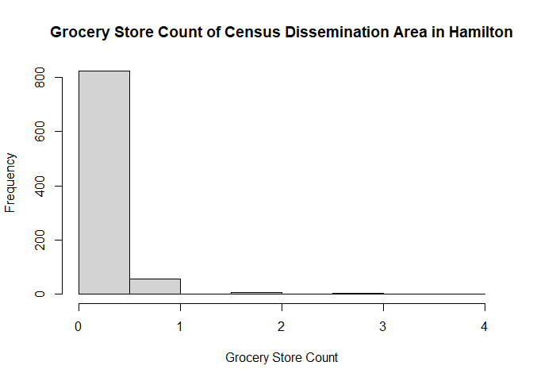

This package is an activity completed by Zehui Yin for the course GEOG 712 Reproducible Research Workflow with GitHub and R, taught by Dr. Antonio Paez in Fall 2024.
It includes the data for the paper titled “Food Deserts or Food Oases? Predicting Grocery Store Locations in Hamilton, Ontario,” which is the final project for the course.
Installation
You can install the development version of GroceryStoreHamiltonData from GitHub with:
if(!require(remotes)){
install.packages("remotes")
library(remotes)
}
remotes::install_github("zehuiyin/GroceryStoreHamiltonData")Example
This is a basic example which shows you how to solve a common problem:
Load and plot the grocery_CT vector data. This dataset includes the geYometry of all the census tracts in Hamilton and contains a variable that shows the count of grocery stores in each census tract.
data("grocery_DA")
hist(grocery_DA$Freq,
main = "Grocery Store Count of Census Dissemination Area in Hamilton",
xlab = "Grocery Store Count")
How to cite
Yin, Z. (2024). GroceryStoreHamiltonData: Data for the paper “Food Deserts or Food Oases? Predicting Grocery Store Locations in Hamilton, Ontario”. https://github.com/zehuiyin/GroceryStoreHamiltonData
@Manual{GroceryStoreHamiltonData,
title = {GroceryStoreHamiltonData: Data for the paper "Food Deserts or Food Oases? Predicting Grocery Store Locations in Hamilton, Ontario"},
author = {Zehui Yin},
year = {2024},
note = {R package version 1.0},
url = {https://github.com/zehuiyin/GroceryStoreHamiltonData}
}